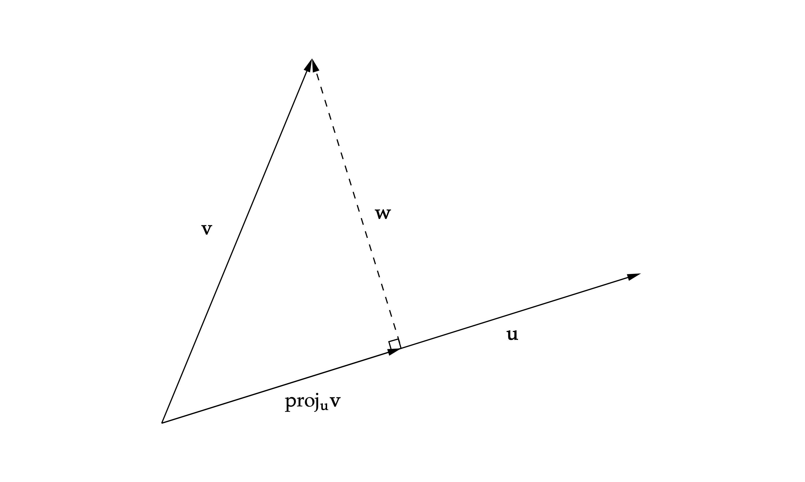

6.2. Norms#
Definition 6.2
Let \(V\) be an inner product space. The norm of a vector \(\mathbf{v} \in V\) is defined as
In the following, we list some fundamental properties of the norms, which can be proved using the properties of inner products.
Proposition 6.1
For vectors \(\mathbf{v}, \mathbf{w}\) in an inner product space, we have
➀ (Positive-Definiteness) \(\norm{\mathbf{v}} \geq 0\) and \(\norm{\mathbf{v}} = 0\) if and only if \(\mathbf{v} = \mathbf{0}\).
➁ (Homogeneity) \(\norm{a \mathbf{v}} = \abs{a} \norm{\mathbf{v}}\) where \(a \in \FF\).
➂ (Triangle Inequality) \(\norm{\mathbf{v} + \mathbf{w}} \leq \norm{\mathbf{v}} + \norm{\mathbf{w}}\).
Proof. Here we only prove the first and the second property, which are immediate results of the properties of inner products. To prove the third property, i.e., the triangle inequality (see Theorem 6.3), we need to use the Cauchy-Schwarz Inequality, which will be shown later.
It is clear from the definition of norms that \(\norm{\mathbf{v}} \geq 0\). Moreover,
We now prove the second property. We have
Hence, \(\norm{a \mathbf{v}} = \abs{a} \norm{\mathbf{v}}\).
Definition 6.3
Two vectors \( \mathbf{u} \) and \(\mathbf{v}\) in an inner product space are said to be orthogonal to each other if
Theorem 6.1 (Pythagoean Theorem)
Let \(\mathbf{u}\) and \(\mathbf{v}\) be two orthogonal vectors in an inner product space \(V\). Then we have the inequality:
Proof. We have
Because \(\mathbf{u}\) and \(\mathbf{v}\) are orthogonal, we have \(\left\langle\mathbf{u}, \mathbf{v} \right \rangle = 0\). Then (6.2) reduces to (6.1).
Note
We are very familiar with the equality
which resembles (6.2) except that the middle term on the right-hand side of (6.2) is taken the real part.
Since we also consider the complex vector space, we cannot change the order of two vectors in an inner product at will, that is, \(\left\langle\mathbf{u}, \mathbf{v} \right \rangle \neq \left\langle\mathbf{v}, \mathbf{u} \right \rangle\) in general.
Next, we shall present the Cauchy-Schwarz Inequality, which is a very important inequality in mathematics. This inequality has many forms across different fields of mathematics, some of which may appear as long scary expressions. In linear algebra, the Cauchy-Schwarz inequality can be simply written as
The general idea of its proof is by considering the projection of one vector onto the other one. Suppose \(\mathbf{\mathbf{u}} \neq \mathbf{0}\), we define a linear map
It is an exercise (Exercise 6.1) to verify that \(\proj_\mathbf{u} \mathbf{v}\) is indeed a linear map. As the notation suggests, \(\proj_\mathbf{u} \mathbf{v}\) is the projected vector of \(\mathbf{v}\) onto \(\mathbf{u}\). See Fig. 6.1

Fig. 6.1 Projection of one vector onto another.#
Though it is intuitive to see the map \(\proj_\mathbf{u}\) is a projection, we cannot claim so for the time being. Recall we have a formal definition for projections (Definition 2.1). That is, a projection \(P\) is a linear map satisfying \(P^2 = P\). We now show that \(\proj_\mathbf{u}\) indeed satisfies this requirement. We have
Therefore, indeed \(\proj_\mathbf{u}^2 = \proj_\mathbf{u}\), i.e., \(\proj_\mathbf{u}\) is a projection.
Note that \(\mathbf{v}\) can be written as
We have
That is,
This implies that \(\mathbf{v}\) can be decomposed as a sum of two orthogonal vectors, one of which is its projection onto \(\mathbf{u}\). As illustrated in Fig. 6.1, \(\proj_{\mathbf{u}} \mathbf{v} \bot \mathbf{w}\) where \(\mathbf{w} = \mathbf{v} - \proj_{\mathbf{u}} \mathbf{v}\).
From Fig. 6.1, we observe that the length of the projected vector is less than or equal to that of the original one, i.e., \(\norm{\proj_{\mathbf{u}} \mathbf{v}} \leq \norm{\mathbf{v}}\). This is precisely the idea of the proof of Cauchy-Schwarz inequality.
Exercise 6.1
Show that \(\proj_\mathbf{u} \mathbf{v}\) defined in (6.3) is a linear map. What if we replace its definition with \((\left\langle\mathbf{v}, \mathbf{u} \right \rangle / \norm{\mathbf{u}}^2) \mathbf{u}\)? Is it still a linear map?
Theorem 6.2 (Cauchy-Schwarz Inequality\index{Cauchy-Schwarz inequality})
Let \(\mathbf{u}\) and \(\mathbf{v}\) be two vectors in an inner product space. Then
The equality in (6.5) holds if and only if \(\mathbf{u}\) and \(\mathbf{v}\) are linearly dependent.
Proof. If \(\mathbf{u} = \mathbf{0}\), then the conclusion is trivial since the equality of (6.5) holds and \(\mathbf{u}\) and \(\mathbf{v}\) are linearly dependent.
In the following, we assume \(\mathbf{u} \neq \mathbf{0}\). Note that \(\mathbf{v}\) can be written as
We have shown in (6.4) that \(\mathbf{v} \bot (\mathbf{v} - \proj_{\mathbf{u}} \mathbf{v})\). Then the Pythagorean Theorem (Theorem 6.1) implies
Rearranging the terms in (6.6) and then taking the square root gives
Note that the equality in (6.7) holds if and only if the equality in (6.6) holds. And that happens if and only if
which is equivalent to that \(\mathbf{u}\) and \(\mathbf{v}\) are linearly dependent. This completes the proof.
The famous triangle inequality can be proved using the Cauchy-Schwarz inequality.
Theorem 6.3 (Triangle Inequality)
For \(\mathbf{u}, \mathbf{v}\) in an inner product space, we have the following inequality:
The equality in (6.8) holds if and only if one vector is a nonnegative multiple of the other.
Proof. If \(\mathbf{u} = \mathbf{0}\), then (6.8) clearly holds since both sides of are equal to \(\norm{\mathbf{v}}\). And in this case, we can say \(\mathbf{u}\) is a nonnegative multiple of \(\mathbf{v}\) by writing \(\mathbf{u} = 0 \mathbf{v}\).
We now assume \(\mathbf{u} \neq 0\) in the rest of the proof. We have
Applying the Cauchy-Schwarz inequality (Theorem 6.2) to the right-hand side of (6.9) gives
Inequality (6.8) then follows by combining (6.9) and (6.10).
Now, we discuss when the equality holds in (6.8). It is clear from the context that the equality in (6.8) holds if and only if the equalities hold simultaneously in (6.9) and (6.10). We know that the equality in (6.9) holds if and only if \(\left\langle\mathbf{u}, \mathbf{v} \right \rangle \geq 0\)(this implicitly requires that the inner product is a real number). On the other hand, as stated in Theorem 6.2, the equality in (6.10) holds if and only if \(\mathbf{u}\) and \(\mathbf{v}\) are linearly dependent. Since \(\mathbf{u} \neq \mathbf{0}\), this is equivalent to that \(\mathbf{v} = a \mathbf{u}\) for some \(a \in \FF\). In summary, the equality in (6.8) holds if and only if
This is equivalent to saying that \(\mathbf{v}\) is a nonnegative multiple of \(\mathbf{u}\).